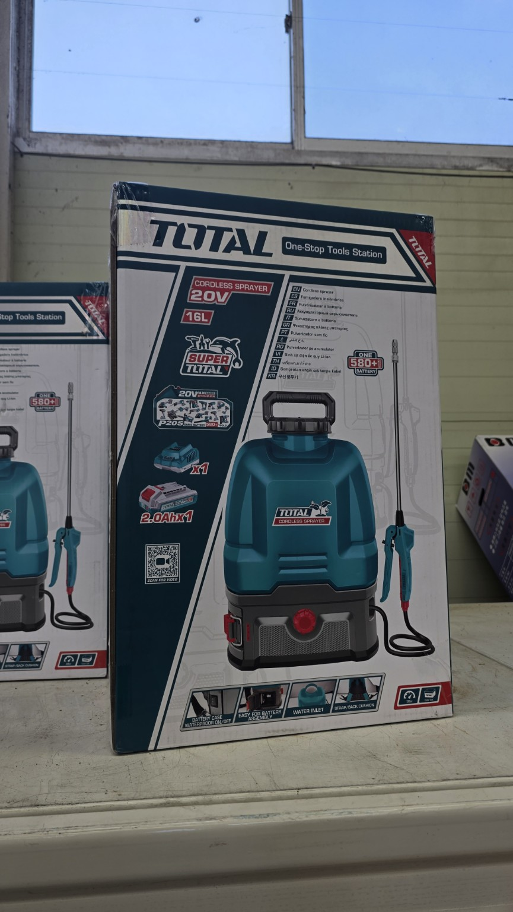
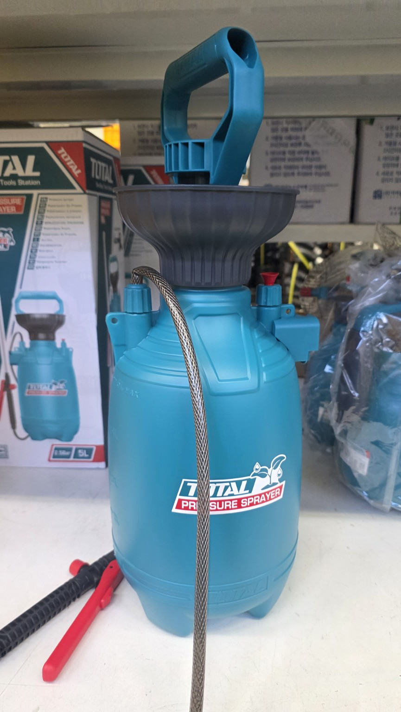
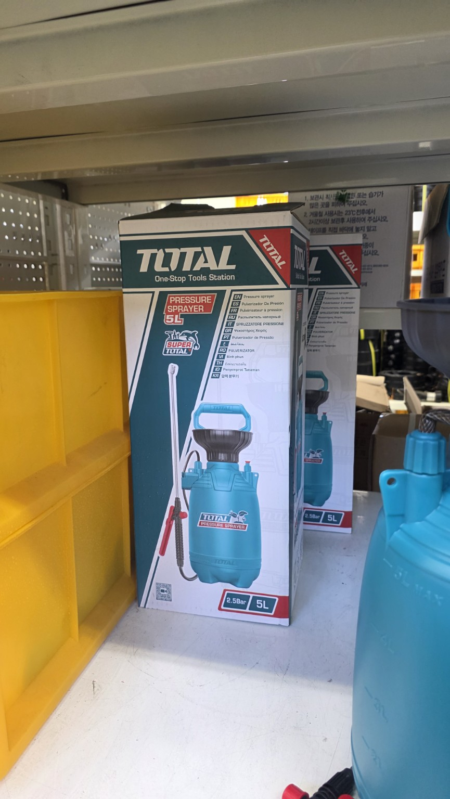
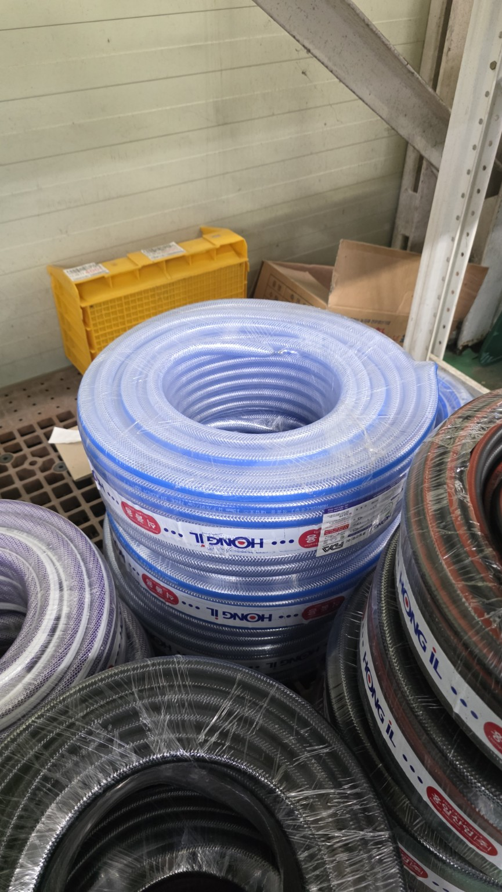
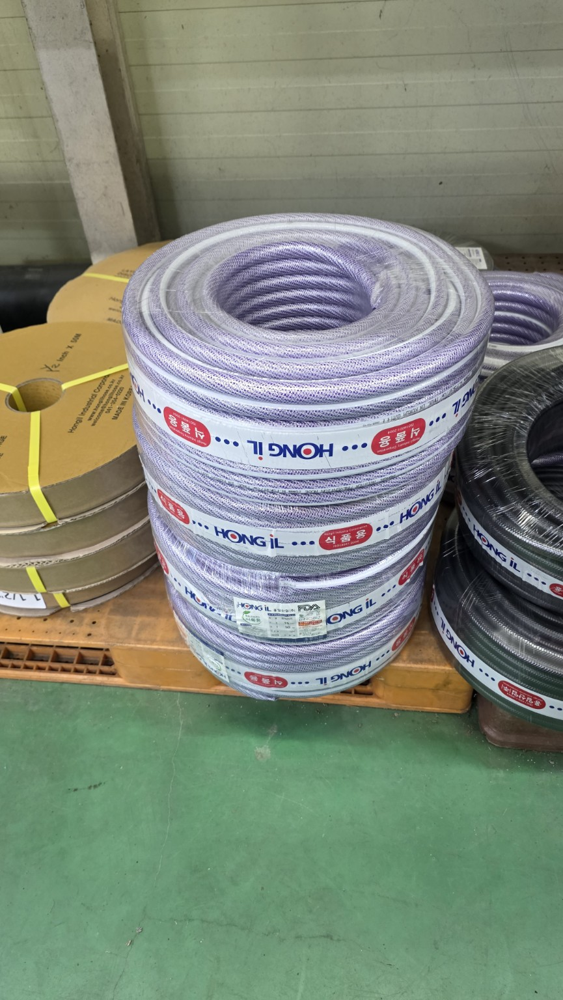

← 화곡농장 공개 아카이브
화곡농장 분무기 편사호스 사진정리
2026-10-04

01_TOTAL_20V_16L_충전식분무기.jpg

02_TOTAL_5L_수동분무기_본체.jpg

03_TOTAL_5L_수동분무기_포장.jpg

04_HONGIL_청색_편사호스.jpg

05_HONGIL_투명_편사호스.jpg
문서·원본
20261004_화곡농장_분무기_편사호스_사진정리.html
20261004_화곡농장_분무기_편사호스_사진정리.md